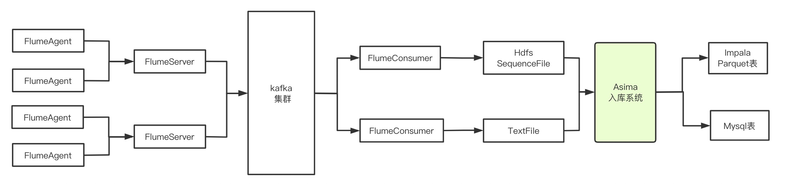
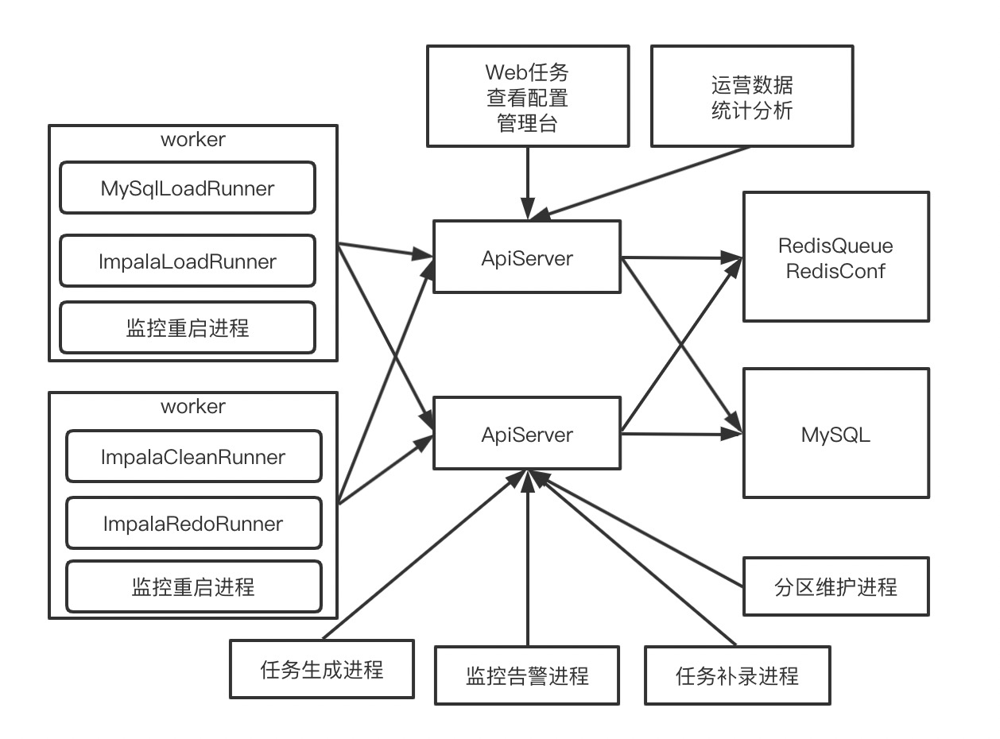

网心-Asima动态数据入库系统设计开发
角色
设计开发负责人
背景
数据采集入库整体流转图

由于flume没有写Parquet文件的功能，而hive和impala中parquet列式文件存储格式效率比较高，
所以flumeServer消费kafka的数据，根据配置写到hdfs上面到sequence文件格式需要转化程parquet文件格式，
同时flumeServer写到本地磁盘上面的的文本格式文件需要入库到mysql中。
所以设计开发了asima动态数据入库系统，
把1分钟1个分区目录中的文件转换成parquet文件格式写到impala中，
把本地磁盘上的文件写到mysql中。
后来变更
- 增加了flumeParquetSink组件，直接写ImpalaParquet表
- 增加了flumeKuduSink组件，直接写ImpalaKudu表
- 增加了flumeMysqlSink组件，直接写入mysql/tidb表
- 增加了flumeClickhouseSink组件，直接写入clickhouse表
版本变更
先后经历过1.0, 2.0, 3.0三个大版本
面临的问题(1.0和2.0)
- 数据晚到（网络故障，采集延迟，消费延迟，数据堆积，时钟错误，上报问题)
- 集群故障 (不丢失数据，不重复入数据)
- 280多个接口如何保证在1分钟内入完
- 分区太多，如何清理，减少元数据占用，小文件占用资源
- 如何在入库的过程中过滤掉异常数据(历史数据，未来数据，脏数据)
- 入库执行情况跟踪
- 是否可以根据目录切割粒度进行入库
- 如何兼容多个不同的集群配置
- 如何让重要的任务先入库 ……
开发工具
- 开发语言python2.7.13
- 开发框架Flask,MySQL-python,requests,click,impyla等
- 数据存储mysql5.7
- 数据缓存redis
系统架构

项目采用Master/Worker模式，部署两条Master，多台Worker
Master负责提供服务，操作数据，操作缓存
Worker负责执行具体的入库任务，清理任务，补录任务等
数据存储核心有两张表，任务配置表，Job配置表
- 任务生成进程：负责每分钟调用接口，生成需要入库的任务实例，写入DB，同时写入Redis缓存队列
- 任务补录进程：是手工调用或监控调用，生成缺失的Job实例
- 监控告警进程：负责统计入库任务堆积情况，runner并发情况，失败情况
- 分区维护进程：负责Job表分区的增加和删除工作
- Worker上面进程：从Master请求Job，进行实际的入库，并上报各种状态到Master
- 监控重启进程：负责Worker健康状态检查
功能模块
- 任务管理
- Job管理
- 分区管理
- 监控告警管理
- 心跳管理
- worker控制
- runner开发
使用情况
asima动态入库系统是数平在由Hadoop1.0老集群往CDH自建集群迁移的过程中，
需要解决数据使用效率的问题而发起的一个项目。
系统历经三次大的版本迭代，期间前两个版本出现重启丢失数据，数据无法补录，入库效率低，脏数据等问题，
从2018年6月开始重新设计新的入库架构，2018年07月开始开发，2018年10月完成开发，开始灰度，
2018年11月灰度完成，新的入库系统3.0正式、上线，解决了之前遇到的各种问题。
新入库系统每分钟完成数平281个接口的准实时动态入库，接入配置化，每分钟入库峰值3.7亿条，
每天入库2470亿，最大接口每分钟7750万，每天560亿，系统可用性99.99%，
监控，告警，重启，日志，入库数据分析等很多功能做到自动化处理。